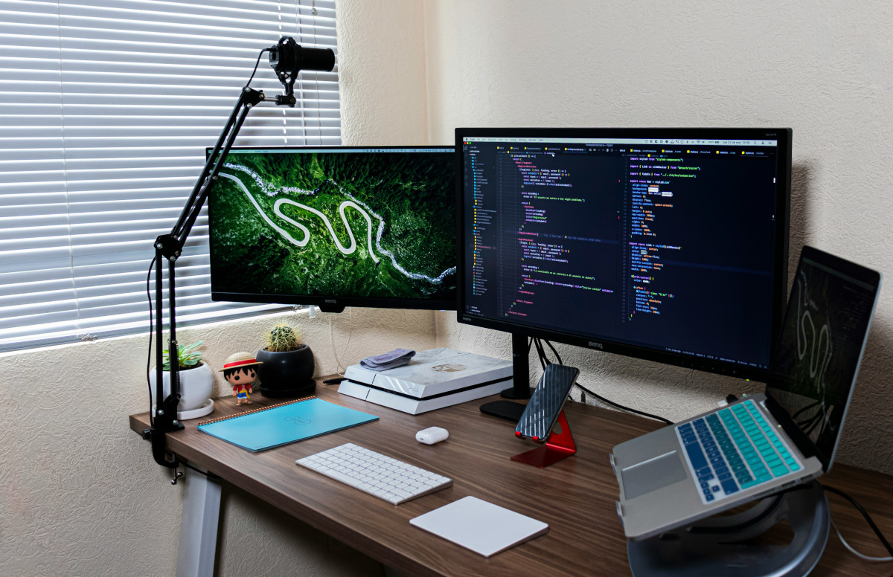
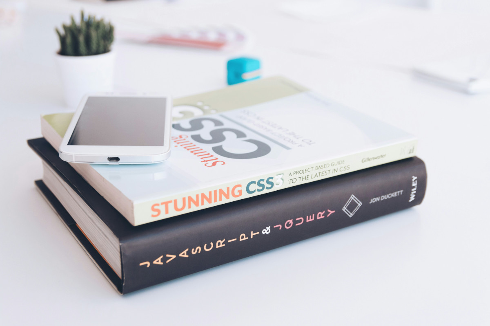
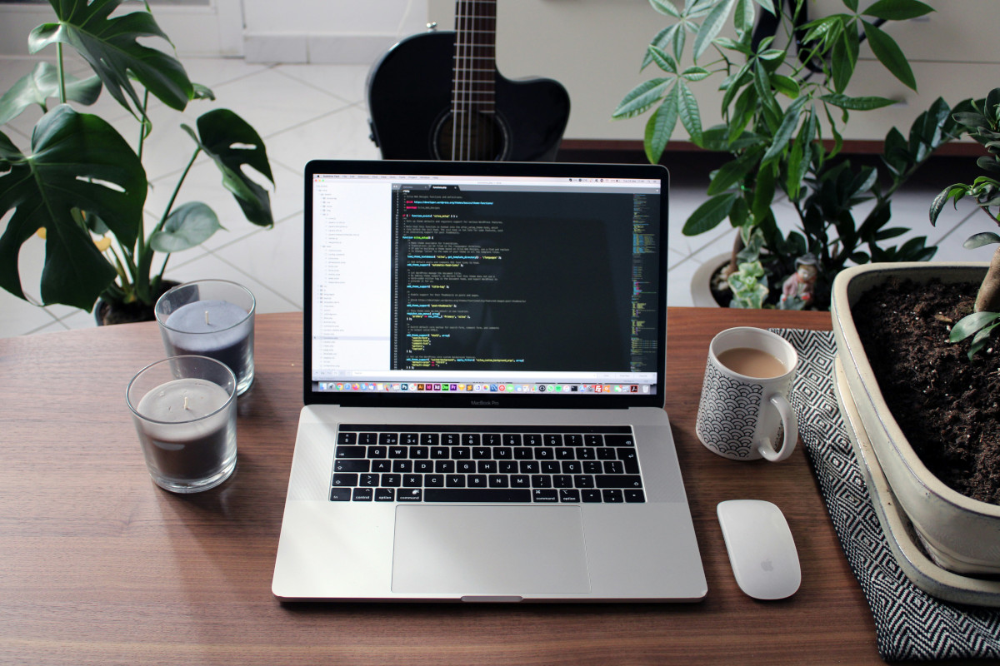
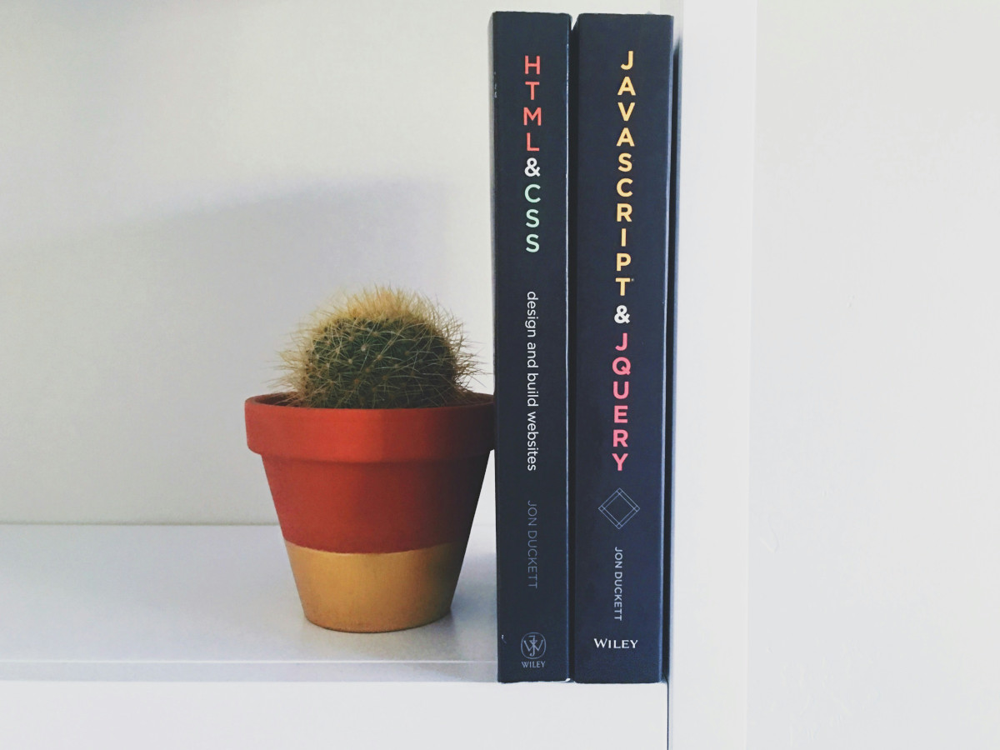

Sou Maria Eduarda Dias Lopes, profissional em formação na área de Projetos e Gestão de Tecnologia. Sou formada no curso Técnico em Desenvolvimento de Sistemas pelo SENAI e atualmente curso Sistemas de Informação na UNA. Atuo na Nérus na área de Projetos e Implantação de Sistemas, acompanhando demandas, organização de atividades, alinhamento entre equipes e processos utilizando metodologias ágeis. Tenho interesse em Gestão de Projetos, Product Owner, melhoria de processos e soluções tecnológicas que gerem valor para os negócios.
Formação técnica voltada para desenvolvimento de sistemas, programação e tecnologia.
Visualizar certificadoConhecimentos em desenvolvimento Backend com Java, utilizando lógica de programação.
Visualizar certificadoConhecimentos em gestão de projetos, organização de demandas e metodologias ágeis.
Visualizar certificado



Meu nome é Maria Eduarda Dias Lopes, tenho 22 anos e sou formada no curso Técnico em Desenvolvimento de Sistemas pelo SENAI. Atualmente, curso Sistemas de Informação na UNA, onde venho ampliando meus conhecimentos em tecnologia, gestão e projetos em TI.
Atualmente, atuo na Nérus, empresa de tecnologia especializada em soluções de gestão para o varejo, na área de Projetos e Implantação de Sistemas. Desenvolvo experiência com acompanhamento de demandas, organização de atividades, alinhamento entre equipes, participação em reuniões, apoio ao planejamento das entregas e utilização de metodologias ágeis.
Minha formação técnica em Desenvolvimento de Sistemas contribuiu para minha base em tecnologia, lógica de programação, banco de dados e desenvolvimento de soluções, permitindo uma visão mais ampla entre as necessidades do negócio e as soluções tecnológicas.
Tenho interesse em construir minha carreira na área de Projetos, Gestão de Produtos e Tecnologia, unindo conhecimentos técnicos com habilidades de organização, comunicação, planejamento e melhoria contínua.
Busco constantemente evoluir profissionalmente por meio de cursos, certificações e novos desafios, contribuindo com dedicação e aprendizado para projetos e equipes que valorizem inovação e desenvolvimento.
Estou motivada a continuar aprendendo, enfrentar novos desafios e contribuir com dedicação, organização e comprometimento em projetos e equipes que valorizem inovação, crescimento e desenvolvimento contínuo.